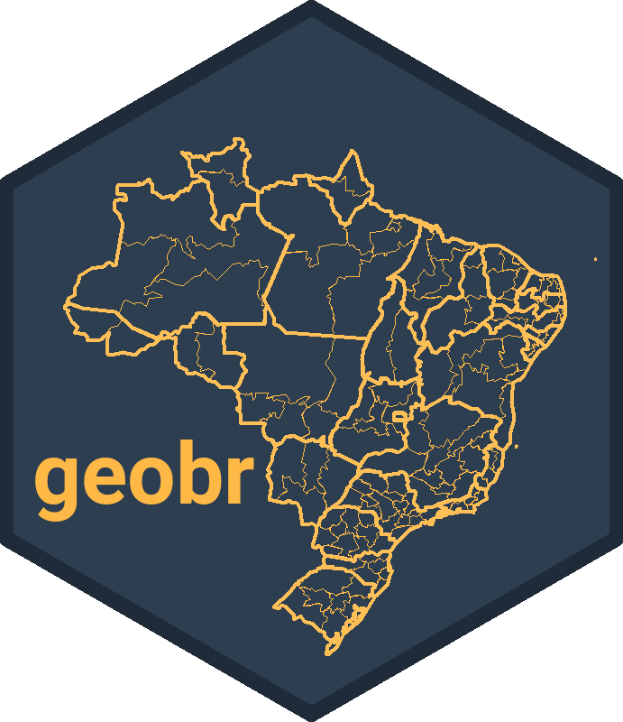
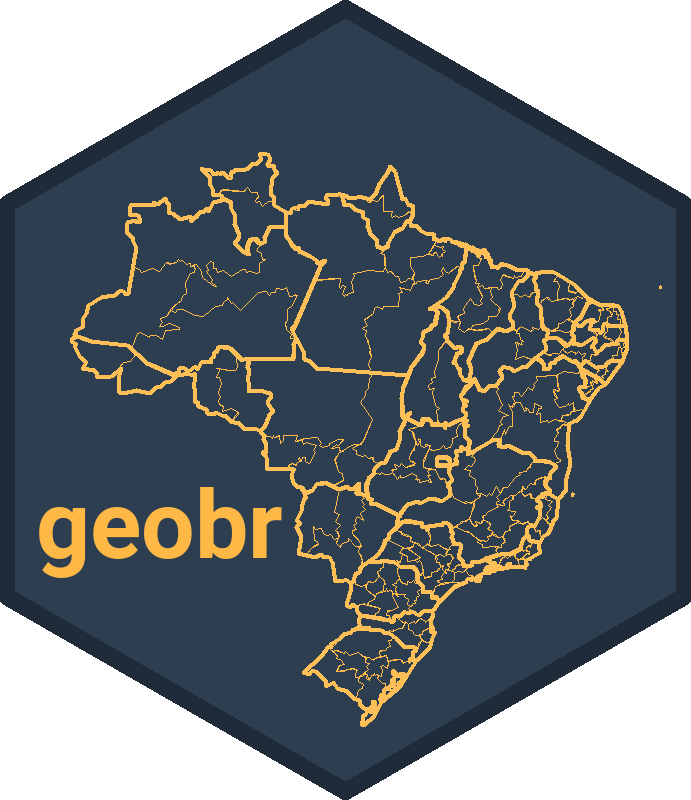

Como acessar dados geoespaciais abertos do Brasil com geobr
Open Data Day - PyLadies São Paulo
29/03/2025
Beatriz Milz
- Doutora em Ciência Ambiental no IEE/USP
- Atualmente: Estágio pós-doutoral na UFABC
- Co-organizadora da R-Ladies São Paulo
- Software peer review editor na rOpenSci
- GitHub Star
Pacote geobr
O pacote geobr disponibiliza funções para obter diversas bases de dados espaciais oficiais do Brasil.
O pacote foi desenvolvido e é mantido pela equipe do Instituto de Pesquisa Econômica Aplicada (IPEA).
Você pode saber mais no repositório do pacote no GitHub.
Disponível para
RePython.
 

Fazer um disclaimer: eu programo em R há mais tempo. tem materiais que já fiz sobre isso. deixar links.
Conceitos importantes
Tipos de dados espaciais
- Dados vetoriais
- Dados matriciais/raster

Fonte da imagem: https://guides.lib.uw.edu/
Dados vetoriais
- Representação do mundo por pontos, linhas e polígonos.
Fonte: Geocomputation with R
Com o geobr, trabalhamos com dados vetoriais!
Pontos: localização de uma escola, ponto de coleta, etc.
Linhas: ruas/estradas/rodovias, rios, etc.
Polígonos: delimitação de cidades, estados, países, etc.
geobr
Instalação
Instalação das bibliotecas
Para o Python, o geobr está disponível no pip.
Instalar outras dependências que precisaremos:
- Para usar o método
.explore():
Importação de dados
Importando bibliotecas
Listando funções disponíveis
Function: read_country
Geographies available: Country
Years available: 1872, 1900, 1911, 1920, 1933, 1940, 1950, 1960, 1970, 1980, 1991, 2000, 2001, 2010, 2013, 2014, 2015, 2016, 2017, 2018, 2019, 2020
Source: IBGE
------------------------------
Function: read_region
Geographies available: Region
Years available: 2000, 2001, 2010, 2013, 2014, 2015, 2016, 2017, 2018, 2019, 2020
Source: IBGE
------------------------------
Function: read_state
Geographies available: States
Years available: 1872, 1900, 1911, 1920, 1933, 1940, 1950, 1960, 1970, 1980, 1991, 2000, 2001, 2010, 2013, 2014, 2015, 2016, 2017, 2018, 2019, 2020
Source: IBGE
------------------------------
Function: read_meso_region
Geographies available: Meso region
Years available: 2000, 2001, 2010, 2013, 2014, 2015, 2016, 2017, 2018, 2019, 2020
Source: IBGE
------------------------------
Function: read_micro_region
Geographies available: Micro region
Years available: 2000, 2001, 2010, 2013, 2014, 2015, 2016, 2017, 2018, 2019, 2020
Source: IBGE
------------------------------
Function: read_intermediate_region
Geographies available: Intermediate region
Years available: 2017, 2019, 2020
Source: IBGE
------------------------------
Function: read_immediate_region
Geographies available: Immediate region
Years available: 2017, 2019, 2020
Source: IBGE
------------------------------
Function: read_municipality
Geographies available: Municipality
Years available: 1872, 1900, 1911, 1920, 1933, 1940, 1950, 1960, 1970, 1980, 1991, 2000, 2001, 2005, 2007, 2010, 2013, 2014, 2015, 2016, 2017, 2018, 2019, 2020, 2021, 2022
Source: IBGE
------------------------------
Function: read_municipal_seat
Geographies available: Municipality seats (sedes municipais)
Years available: 1872, 1900, 1911, 1920, 1933, 1940, 1950, 1960, 1970, 1980, 1991, 2010
Source: IBGE
------------------------------
Function: read_weighting_area
Geographies available: Census weighting area (área de ponderação)
Years available: 2010
Source: IBGE
------------------------------
Function: read_census_tract
Geographies available: Census tract (setor censitário)
Years available: 2000, 2010, 2017, 2019, 2020
Source: IBGE
------------------------------
Function: read_statistical_grid
Geographies available: Statistical Grid of 200 x 200 meters
Years available: 2010
Source: IBGE
------------------------------
Function: read_metro_area
Geographies available: Metropolitan areas
Years available: 1970, 2001, 2002, 2003, 2005, 2010, 2013, 2014, 2015, 2016, 2017, 2018
Source: IBGE
------------------------------
Function: read_urban_area
Geographies available: Urban footprints
Years available: 2005, 2015
Source: IBGE
------------------------------
Function: read_amazon
Geographies available: Brazil's Legal Amazon
Years available: 2012
Source: MMA
------------------------------
Function: read_biomes
Geographies available: Biomes
Years available: 2004, 2019
Source: IBGE
------------------------------
Function: read_conservation_units
Geographies available: Environmental Conservation Units
Years available: 201909
Source: MMA
------------------------------
Function: read_disaster_risk_area
Geographies available: Disaster risk areas
Years available: 2010
Source: CEMADEN and IBGE
------------------------------
Function: read_indigenous_land
Geographies available: Indigenous lands
Years available: 201907, 202103
Source: FUNAI
------------------------------
Function: read_semiarid
Geographies available: Semi Arid region
Years available: 2005, 2017, 2021, 2022
Source: IBGE
------------------------------
Function: read_health_facilities
Geographies available: Health facilities
Years available: 201505, 202303
Source: CNES, DataSUS
------------------------------
Function: read_health_region
Geographies available: Health regions and macro regions
Years available: 1991, 1994, 1997, 2001, 2005, 2013
Source: DataSUS
------------------------------
Function: read_neighborhood
Geographies available: Neighborhood limits
Years available: 2010
Source: IBGE
------------------------------
Function: read_schools
Geographies available: Schools
Years available: 2020, 2023
Source: INEP
------------------------------
Function: read_comparable_areas
Geographies available: Historically comparable municipalities, aka Áreas mínimas comparáveis (AMCs)
Years available: 1872, 1900, 1911, 1920, 1933, 1940, 1950, 1960, 1970, 1980, 1991, 2000, 2010
Source: IBGE
------------------------------
Function: read_urban_concentrations
Geographies available: Urban concentration areas (concentrações urbanas)
Years available: 2015
Source: IBGE
------------------------------
Function: read_pop_arrangements
Geographies available: Population arrangements (arranjos populacionais)
Years available: 2015
Source: IBGE
------------------------------Como consultar a delimitação do Brasil?
Informações retornadas por geobr.list_geobr():
Function: read_country
Geographies available: Country
Years available: 1872, 1900, 1911, 1920, 1933, 1940, 1950, 1960, 1970, 1980, 1991, 2000, 2001, 2010, 2013, 2014, 2015, 2016, 2017, 2018, 2019, 2020
Source: IBGEUtilizando a função:
Explorando o objeto:
<class 'geopandas.geodataframe.GeoDataFrame'>
RangeIndex: 1 entries, 0 to 0
Data columns (total 1 columns):
# Column Non-Null Count Dtype
--- ------ -------------- -----
0 geometry 1 non-null geometry
dtypes: geometry(1)
memory usage: 140.0 bytesInformações relevantes:
Tem apenas 1 linha e 1 coluna (chamada
geometry)Classe do objeto é
geopandas.geodataframe.GeoDataFrame
O que é o geopandas?
- Pandas é uma biblioteca Python focada em manipulação e análise de dados.
- GeoPandas é uma biblioteca Python que estende as funcionalidades do Pandas para dados geoespaciais.
- Facilita a leitura, manipulação, análise e visualização de dados vetoriais (shapes) dentro de um único ecossistema.
- Cada linha em um GeoDataFrame corresponde a uma entidade geoespacial (por exemplo, um polígono de município).
- A coluna
geometryarmazena a forma geográfica em si (pontos, linhas ou polígonos).
Buscando a delimitação dos estados
<class 'geopandas.geodataframe.GeoDataFrame'>
RangeIndex: 27 entries, 0 to 26
Data columns (total 6 columns):
# Column Non-Null Count Dtype
--- ------ -------------- -----
0 code_state 27 non-null float64
1 abbrev_state 27 non-null object
2 name_state 27 non-null object
3 code_region 27 non-null float64
4 name_region 27 non-null object
5 geometry 27 non-null geometry
dtypes: float64(2), geometry(1), object(3)
memory usage: 1.4+ KB| code_state | abbrev_state | name_state | code_region | name_region | geometry | |
|---|---|---|---|---|---|---|
| 26 | 53.0 | DF | Distrito Federal | 5.0 | Centro Oeste | MULTIPOLYGON (((-47.41734 -15.54655, -47.4172 ... |
| 5 | 16.0 | AP | Amapá | 1.0 | Norte | MULTIPOLYGON (((-50.45011 2.10924, -50.44715 2... |
| 20 | 41.0 | PR | Paraná | 4.0 | Sul | MULTIPOLYGON (((-48.40736 -25.8427, -48.4075 -... |
| 6 | 17.0 | TO | Tocantins | 1.0 | Norte | MULTIPOLYGON (((-48.23291 -5.94757, -48.23163 ... |
Funções similares
read_country(): Delimitação do Brasilread_state(): Delimitação dos estados do Brasilread_state("SP"): Delimitação de um estado específico, usando a sigla como argumentoread_municipality(): Delimitação de todos os municípios do Brasil. É uma base pesada!read_municipality(code_muni = 3550308): Delimitação de um município específico, usando o código do IBGE do município.
Visualização
Como podemos visualizar?
Visualizando o mapa
Dica
- O pacote
{geobr}faz o download das bases de dados. Isso significa que:- Você precisa estar conectado à internet para baixar as bases de dados.
- Caso o servidor onde os dados estão armazenados esteja fora do ar, você não conseguirá baixar as bases de dados.
Uma sugestão é salvar os resultados em um arquivo após baixar os dados, para evitar ter que baixar novamente.
Pacotes de dados brasileiros desenvolvidos pelo IPEA


Materiais para estudar mais
Exemplos similares
Referências sobre dados espaciais
Muito obrigada!
Slides feitos com Quarto.